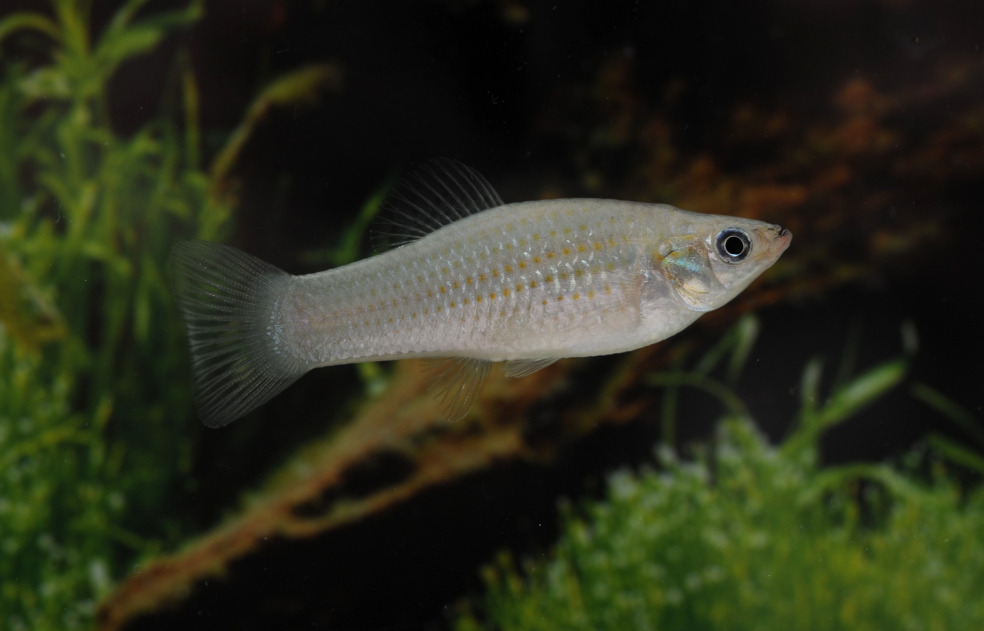
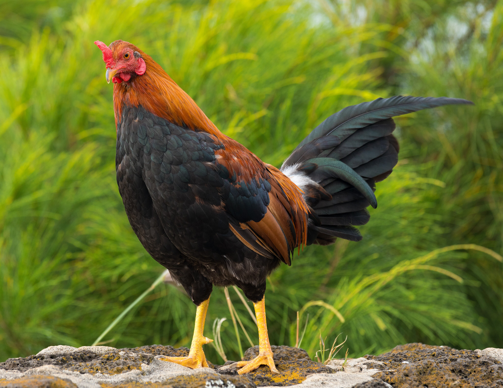
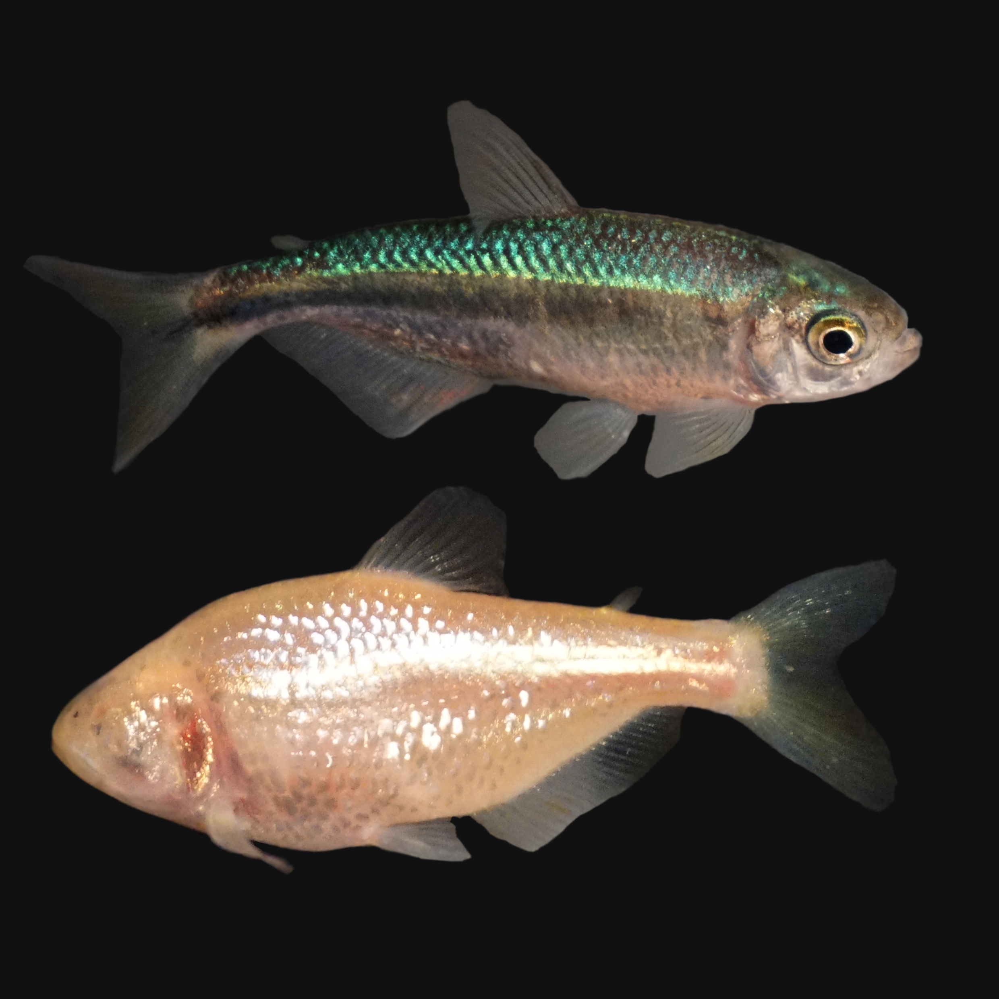

Projects
I study the genomes of a variety of fun animals. Here are three I'm especially fond of.

Amazon molly
The Amazon Molly, Poecilia formosa, is a small fish named after the all-female warriors of Greek mythology because it is an all-female species. It reproduces clonally, giving live birth to genetic copies of itself. The species arose from a hybridization of two other Poecilia species, and the two parental species' genomes have recombined very little since then, making this fish a good system for learning about how genomes evolve differently under sexual vs. asexual reproduction.
Links:
Wikipedia page about the species
A paper I (and others!) wrote about this fish's evolution

Chicken
Between eggs and meat, chickens are the largest source of animal protein in human diets worldwide. Their domestication and spread has given rise to a diverse array of breeds and commercial lines adapted for specific places and uses, providing a good system for studying the effects of domestication and artificial selection on genomes. Additionally, they are susceptible to many diseases, many of which can infect humans, so understanding the genetic basis of their resistance to disease is vital to global food security and human health.
Links:
A paper about a chicken pangenome
A paper about how immune systems of chickens bred to be resistant to Marek's disease respond differently to infection than chickens without genetic resistance.

Mexican cavefish
Mexican tetras are a single species of fish (Astyanax mexicanus) containing both surface-dwelling fish and other fish that live in caves. The cave-dwelling fish are highly adapted to subterranean life: they've lost their eyesight and fear of predators, gained an ability to survive long periods of starvation, and even have immune systems adaptations for the low-parasite cave environment. The cave and surface ecotypes are closely related and can interbreed with each other, providing a good opportunity to study how their genomes have changed to allow them to thrive underground.
Links:
Wikipedia page about the species
A paper about reference genomes I assembled for several populations of the species